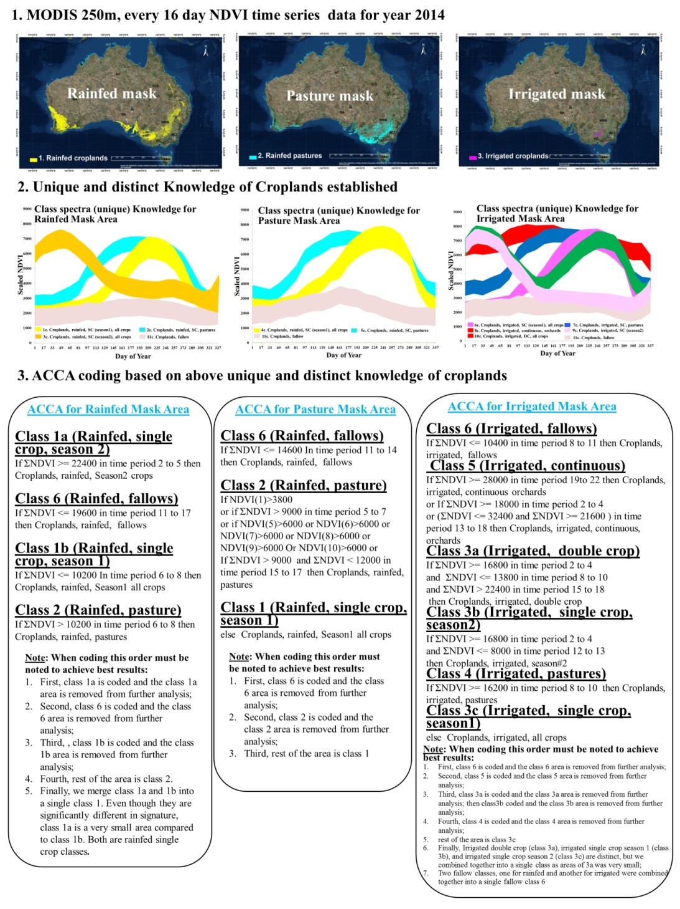

(click image to enlarge)
ACCA algorithm sample code.
Sample coding in an automated cropland classification algorithm (ACCA)(that makes use of fusion of multi-sensor data along with secondary data.
Models & Algorithms |
- Global and regional cropland extent, area, and characteristics (e.g., crop types, cropping intensities, irrigated versus rainfed) classification algorithms -
- ACCA (Automated Cropland Classification Algorithms) (Thenkabail & Wu)
- ACCA Tajikistan (Wu & Thenkabail) - The automated cropland classification algorithm (ACCA) is written in ERDAS Modeler, and hence the algorithm file is available in .gmd format.
- Algorithm
- Output
- Readme
- Sample dataset
- ACCA California (Wu & Thenkabail) - An automated cropland classification algorithm (ACCA) that is rule-based is illustrated here for the state of California, USA. The goal of the ACCA is to automatically compute cropland characteristics such as: (a) cropland extent\area; (b) crop type, (c) cropping intensity, and (d) irrigated versus rainfed. However, ACCA here is focused on automatically determining cropland extent using multi-sensor remote sensing and secondary data for the state of California. First, a Mega-file data cube (MFDC) (see section 2.0) was created using Moderate Resolution Imaging Spectroradiometer (MODIS) for year 2010 monthly maximum value composite (MVC) normalized difference vegetation index (NDVI) time-series and Landsat TM5 July 2010 surface reflectance (one time) data. Secondary data (e.g., precipitation, elevation, temperature) did not add additional value in cropland classification and hence were dropped. Second, ACCA algorithm is developed to accurately determine cropland extent. The ACCA algorithm is developed to replicate a truth layer (e.g., a nationally derived map or rigorously interpreted map of cropland that is quite accurate). Third, the goal of ACCA is to automatically determine the cropland characteristics once the MFDC of the area is ready. This should allow computation of cropland characteristics, for which ACCA is developed, year after year and should have the ability to hindcast and nowcast. An additional benefit of ACCA is that once the croplands are determined, the rest of the croplands should be fallow croplands. ACCA is described in detail below using the State of California. You can also read more on ACCA in a paper (Thenkabail and Wu, 2012).
- Algorithm
- Data
- Data - ACCA California - Additional Data for landsat_mosaic_2007_keyareas_ca(1).ige can be found here.
- Outputs
- Readme
- CART (Giri) - The tools described here were developed for use within the ERDAS Imagine 8.7 software environment, and are for use with the Rulequest Research Cubist and See5/C5.0 software packages above version 1.12 of cubist, and above version 1.18 of see5. The software executables were compiled using the Imagine Toolkit 8.7 and Microsoft Visual C++ 6.0.
- Additional Files
- Readme
- Readme for CART - This document was created in order to detail installation instructions and use of the National Land Cover Dataset (NLCD) Mapping Tool designed, by MDA Federal, Inc., for the United States Geological Survey. All rights to this software are held by the USGS. The tools described in this document were developed for use within the ERDAS Imagine 8.7 software environment, and are for use with the Rulequest Research Cubist and See5/C5.0 software packages above version 1.12 of cubist, and above version 1.18 of see5. The software executables were compiled using the Imagine Toolkit 8.7 and Microsoft Visual C++ 6.0.
- Scripts
- MLA (Ozdogan)
- ACCA (Automated Cropland Classification Algorithms) (Teleguntla et al.,)
- ACCA Australia (Teleguntla et al.,) - The automated cropland classification algorithm (ACCA) is written in ERDAS Modeler, and hence the algorithm file is available in .gmd format. 
- Algorithm
- Output
- Readme
- Dataset